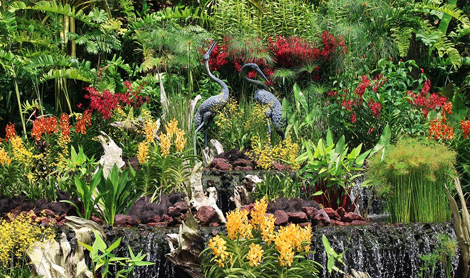

Be one with nature at the Botanic Gardens!
What to see, do and eat at this Wonderful Garden

Photography: NParks
Singapore Botanic Garden is the pride and joy of our country.
Spanning 82 hectares just five minutes away from Orchard Road, the Botanic Garden is a must-see for any nature lover out there.
This UNESCO World Heritage Site is oozing with Singapore's history because it is over 150 years old. This magnificent garden houses
thousands of plant varieties which include rare orchids 🌸 and ancient trees 🌲. It is a wonderful place to spend the weekend with your family and friends, so start packing your picnic basket and come on down!
The Stunning Waterfall at the Ginger Garden.
1. Ginger Garden
Head down to the first stop of the Botanic Gardens which is the Ginger Garden. At this first stop, you will spot giant Amazon water lilies floating in the pool and more than 250 species of gingers found in Asia, the Pacific, Africa and Indochina dotting the area.
You are greeted by a Fountain as you walk into the Orchid Garden

There is a wide variety of orchids both local and rare that can be found in Botanic Garden
2. National Orchid Garden
This is the star 🌟 of the Botanic Gardens, featuring 1,000 species and 2,000 hybrids of orchids. This is the spot where you will want to be dressed up for instagram shots to brighten up your feed. The garden displays some of the rarest species of orchid in world. To see this magnificent orchids, you will have to head to the mist garden where houses award-winning orchid cultivars.
The boardwalk of the Learning Forest
3. Learning Forest
Lace up those hiking shoes because you are in for an adventure. Situated within the garden’s Tyersall-Gallop Core, the Learning Forest features interconnected boardwalks and elevated walkways for you to explore. Feast your eyes 👀 on a range of habitats, including freshwater forest wetland and lowland rainforest.
A beautiful dinning area. Photography: The Halia via Facebook
1. The Halia
Named after the Malay word for ginger, The Halia is a dining space surrounded by the tranquil setting of the Ginger Garden. At this restuarant, you get the option of dining indoors or outdoors where you get up close with Mother Nature while you enjoy your wonderful meal. This place also offers breakfast to kickstart your morning be it on a weekday or weekend.
The Halia, Ginger Garden, Singapore Botanic Gardens, 1 Cluny Road, Singapore 259569
Dine by the garden at Bee's knees. Photography: The Garage via Facebook
2. The Garage
The Garage is a stunning 1920s Art Deco-furnished conservation building, home to two stellar dining concepts. Botanico, located on the second level, is an elegant dining space filled with pockets of greenery. The dishes the restuarant serves combine both European and Asian cusines together. It is a popular wedding spot that features a cool alfresco area where you can enjoy your drinks while immersing yourself in the serene ambience.
At the ground level, is a cafe-bistro that serves great brunch options. It is a great place to hang out with your friends and family over some pasta, pancakes and pizzas.
The Garage, Singapore Botanic Gardens, 50 Cluny Park Road, Singapore 257488
Enjoy the elegance and luxurious dining experience. Photography: Corner House via Facebook
3. Corner House
This is one of the top dining places in the Botanic Gardens. This is the restuarant to go to for special occasions with your loved ones because it exudes an air of historical romance. It has a menu serving dishes inspired by seasonal ingredients,the dining experience is top-notch.
Corner House, EJH Corner House, Singapore Botanic Gardens, 1 Cluny Road, Singapore 259569
1. By MRT 🚆
There is a MRT station called Botanic Gardens, situated at the northwest entrance (Melati Gate) to the Gardens. The station is on both the orange Circle Line and the blue Downtown Line of the MRT, so it is extremely convenient to get to from pretty much anywhere.
For additional information on the MRT:
2. By BUS 🚍
Aside from the MRT, bus is the next best mode of transportation. The bus station is located right next to the MRT station, and also very close to the northwest entrance to the Gardens (Melati Gate)
However, travelling by bus is not recommended for tourists because navigating the bus system is always difficult unless you're a local. However, if you're far from an MRT station, bus may be the best way to get there
3. By Taxi 🚕
If all else fails, there is always the option of flagging a taxi. Although it can be slighlty costly, taxis will always be able to bring you to the destiation. The best way to get a taxi in Singapore is to use Grab app (https://www.grab.com), which is like the Uber of Southeast Asia

Share this Article